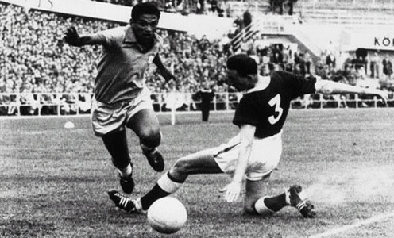
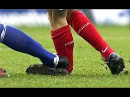

La historia moderna del fútbol, como actualmente se lo concibe, abarca casi unos 150 años de existencia. Comenzó en 1863, cuando en Inglaterra se separaron los caminos del "rugby-football" y del "association
football" y se fundó la Asociación de Fútbol más antigua del mundo:la "Football Association".La historia del fútbol, se considera a partir de 1863, año de fundación de The Football Association, aunque sus
orígenes, al igual que los demás códigos de fútbol, se remontan varios siglos en el pasado, particularmente en las islas británicas durante la edad Media.Si bien existían puntos en común entre diferentes
juegos de pelota que se desarrollaron desde el siglo III a. C.Los primeros códigos británicos que dieron origen al fútbol se caracterizaban por su poca organización y violencia extrema.3 No obstante, también
existían otros códigos menos violentos y mejor organizados. Quizás uno de los más conocidos fue el calcio florentino, deporte de equipo muy popular en Italia que tuvo incidencia en los códigos de algunas escuelas
británicas. La formación definitiva del fútbol tuvo su momento culminante durante el siglo XIX(19).
En 1848 representantes de diferentes colegios ingleses se dieron cita en la Universidad de Cambridge para crear tu código Cambridge, que funcionaría como base para la creación del reglamento del fútbol moderno.
Finalmente, en 1863 en la ciudad de Londres se oficializaron las primeras reglas del fútbol.
Desde entonces el fútbol ha tenido un crecimiento constante, hasta llegar a ser el deporte más popular del mundo con unas 270 millones de personas involucradas.7 Con la realización de la primera reunión de la International
Football Association Board en 1886 y la fundación de la FIFA en 1904, el deporte se ha expandido hasta llegar a todos los rincones del mundo. A partir de 1930 se comenzaría a disputar la Copa Mundial de Fútbol, que se convertiría
en el evento deportivo con mayor audiencia del mundo
ventajas y desventajas

Es así como el deporte del fútbol en nuestros días, presenta un sinnúmero de beneficios propios por la práctica de esta actividad física. Entre algunos beneficios podemos destacar el hecho de tener la descarga de energía propia del
ser humano provocada principalmente por el stress y actividades académicas o laborales, que en determinado momento se acumulan a lo largo de las semanas, esto en particular lo vemos representado por la práctica sabatina o dominical de
uno o más encuentros futbolísticos, en las denominadas pichangas de barrios o en ligas organizadas en cada ciudad de nuestro país. También otro de los beneficios es el disfrute placentero de una actividad que promueve el ocio entre los
seres humanos, una práctica liberadora y a su vez recreativa, creadora de sentimientos y actitudes positivas frente a la vida.
Tal vez, otro de los beneficios en la práctica del fútbol, sea el aprendizaje y experimentación de actitudes y valores morales, al establecer una relación de amistad y trabajo en grupo junto con los compañeros, la aparición del espíritu
de lucha y la disciplina que dan como resultado el triunfo con humildad o la aceptación propia de la derrota en donde en nuestras vidas se pueden ver reflejadas estas actitudes para poder enfrentar de una mejor forma la problemática social
que muchas veces se ve en nuestro país.
No podemos dejar de mencionar la mejora física y mental de nuestro cuerpo a través del desarrollo de nuestras cualidades físicas, lo cual favorece para poder tener una vida más sana y saludable.